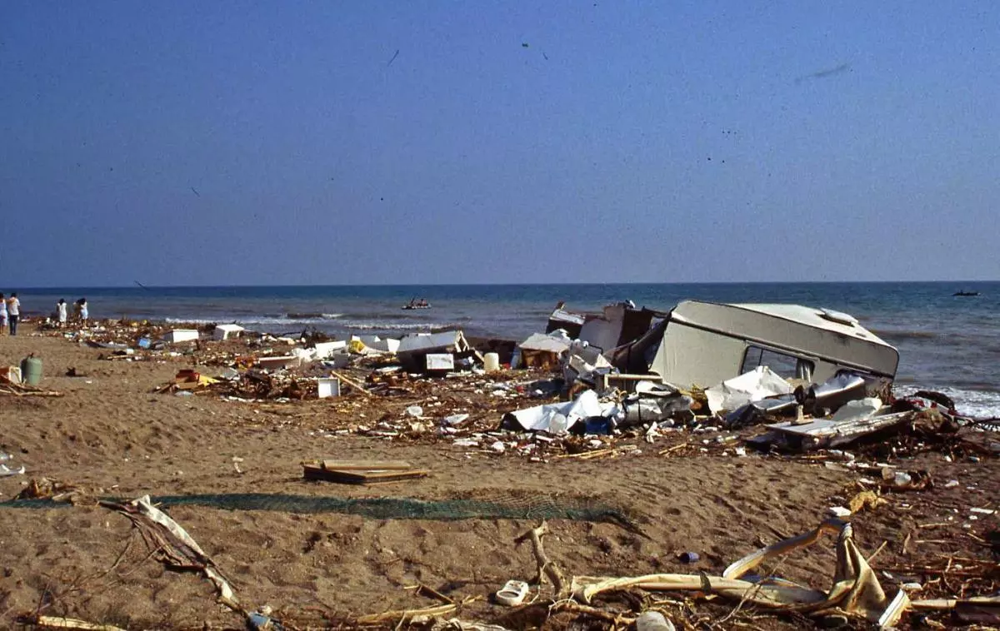

La maldición del camping de Bolnuevo
Una anécdota se repite entre varios transeúntes que han caminado por la orilla de una playa de Mazarrón que pertenecía al camping de Bolnuevo antes de producirse la inundación de 1989 que lo arrasó por completo.
Durante el otoño/invierno, época de muy poca gente, en la playa hay varias personas que cuentan que han sufrido algún percance mientras caminaban por la costa (un tropezón, caída, torcedura de tobillo...) y, de repente, se les acerca una mujer que se identifica como enfermera y les ofrece auxilio.
La mujer examina las heridas, da consejos sobre cómo sanarlas y desaparece, sin más. Lo curioso es que las personas que cuentan esta historia siempre describen a la enfermera de una manera muy similar.

Esta historia resulta aún más escalofriante si tenemos en cuenta que en 1989 una fuerte riada arrastró todo lo que encontró a su paso. Las indagaciones que se narran en Presta atención, están ahí muestran que, aunque la versión oficial habla de dos víctimas,
nunca quedó claro el número de fallecidos que dejó la catástrofe y que hay varios enigmas en torno a la tragedia. El agua destrozó los archivos del camping, por lo que nunca se pudo saber cuántos ocupantes había.
Solo aparecieron dos cuerpos tras la catástrofe, pero las voces captadas en las psicofonías de los investigadores reclaman la búsqueda de los cuerpos y que se haga justicia.
Los rumores hablan de que la zona ahora es un camping fantasma, donde almas deambulan sin rumbo por el recinto, intentando resolver sus cuentas pendientes.
Pincha aquí para ir a la pagina anterior